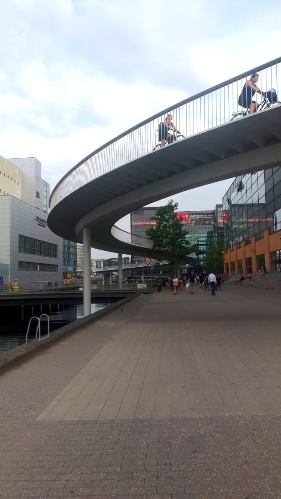
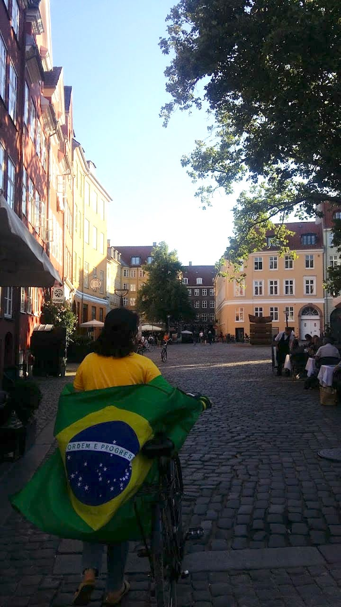

©2017 LabRua
Template: Bootstrapious
+ Kishan B

Uso da bicicleta em Copenhage
2018-06-10; copenhage, bicicleta, viagem
Copenhague. Minha primeira viagem internacional. Meu primeiro contato, efetivo, com outras culturas. Dois meses de muito aprendizado e novas experiências, sendo uma das mais marcantes, no sentido literal da palavra, o uso da bicicleta como meu principal meio de transporte.
por Claudia Palmeira
Uma cidade que tem seu trânsito voltado para o ciclista, além de todo um desenho urbano que promove o uso da bicicleta, tendo como vantagem seu território plano. As ruas de maior movimento possuem ciclovias unidirecionais, com duas faixas, e sinalização voltada para as bikes; enquanto as demais ruas são compartilhadas, o que não é um problema, já que os veículos motorizados, independentemente do porte, respeitam as bicicletas.
Outro fato interessante sobre Copenhague é a existência de políticas de adensamento, para que a malha urbana não se espalhe, o que é ótimo para o ciclista, já que as distâncias entre os extremos da cidade se mantêm, relativamente, constantes, apesar do seu crescimento.
Cheguei lá no mês de Junho e, já no primeiro dia, saímos para assistir ao jogo da copa, a convite de amigos Poloneses. O local onde tínhamos que ir era bem distante de onde eu estava hospedada, do outro lado da cidade, e, como a maioria dos brasileiros, eu sabia andar de bicicleta, porém não no trânsito, muito menos no trânsito de Copenhague.
A quantidade de ciclistas é inacreditável e eles usam a bicicleta para tudo! Deixar os filhos na escola, ir a festas, fazer compras e, claramente, meu ritmo era diferente do deles. Por diversas vezes parei para descansar e o medo de me envolver em algum acidente me deixava bastante tensa e assustada, ao pedalar, o que acabou me levando a bater de frente com uma placa de desvio de obra. Agora imagine, meu primeiro dia na cidade e já tinha conseguido bater de cara com uma placa. Todos que me acompanhavam e que passavam pelo local ficaram alarmados, alguns até pararam para ajudar, mas eu estava bem, apesar de alguns arranhões.
Com o passar dos dias, fui conhecendo a cidade e as rotas que eu poderia utilizar, para chegar ao destino desejado, e me adaptando ao ritmo Dinamarquês. Já entendia as regras entre os ciclistas, os sinais de aviso utilizados e diferenciava a faixa lenta, que eu utilizava na maioria do tempo, da rápida. A sensação de liberdade que sentia, ao andar de bike, era incrível! Além da segurança que a cidade e os motoristas me passavam, o que fez com que eu me tranquilizasse no trânsito.
Depois de mais de um mês vivendo em Copenhague, me adaptei à rotina de pedalar e minha resistência estava muito melhor, para percorrer maiores distâncias. Ia ao supermercado, ao centro, ao shopping, à praia, a qualquer local da cidade, de bicicleta. Eu já me sentia a própria ciclista dinamarquesa! Confiança era meu sobrenome.
Para iniciar minha despedida, decidimos fazer uma “viagem” de bike, para Gilleleje, ao norte de Copenhague, 60 km de distância. Acordamos cedo, preparamos lanches, para o dia inteiro, e iniciamos nossa jornada. Nesse dia, pude perceber que a Dinamarca não é tão plana assim! O caminho inteiro foi baseado em subidas sofridas, e descidas aliviadas. Depois dos primeiros 5 km, minha bike começou a sinalizar problemas, porque ela não era específica para aquele tipo de atividade. Aos 15 km, um dos dentes da coroa da bike, quebrou e a corrente saiu. Adivinha o que aconteceu! Caí, de novo. Estava me despedindo de Copenhague, da mesma maneira como me apresentei, caída no asfalto, porém feliz por enfrentar os desafios.
Se existisse uma forma de resumir minha experiência, eu diria que foi intensa. Os percursos de bicicleta deixaram marcas, que levarei por um bom tempo na pele, mas que guardarei, para sempre, na minha memória.
Entendi que uma cidade bem planejada é fundamental; que uma sociedade bem estruturada visa o melhor para todos, e não o conforto particular, e que a bicicleta pode sim ser o principal meio de deslocamento, independente de idade ou de profissão.
Me despedi de Copenhague com um até breve e com o desejo de incorporar, em meu cotidiano, o uso da bicicleta como um meio de transporte.

